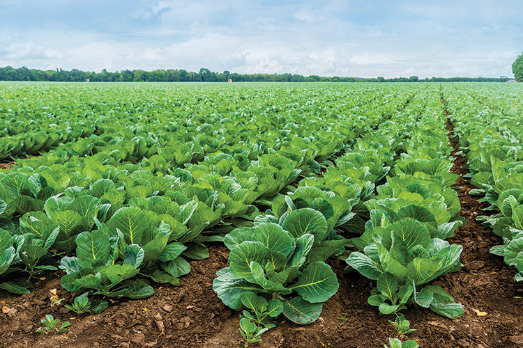
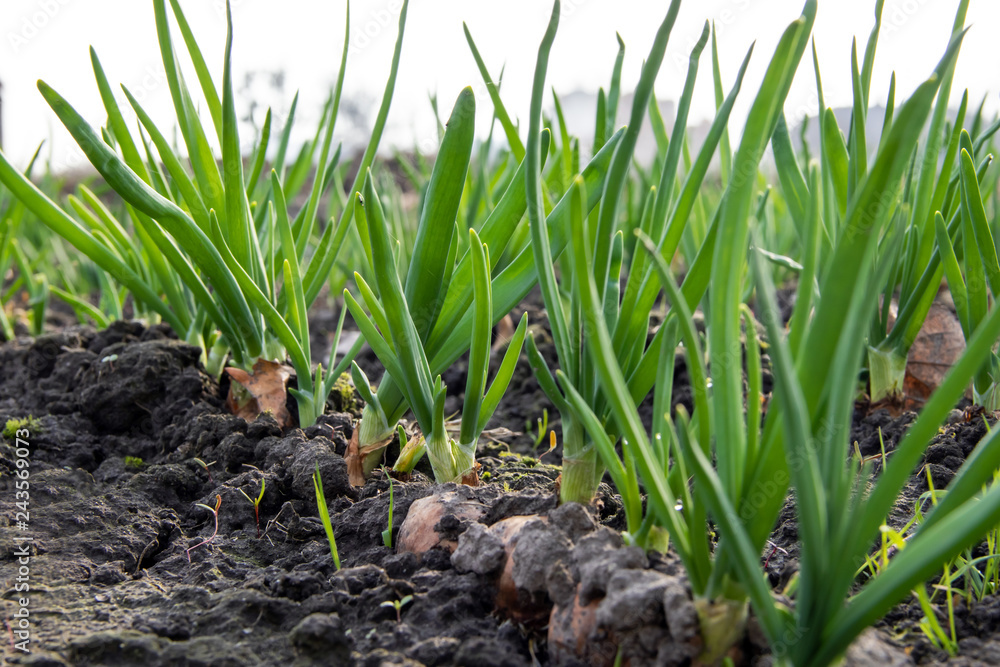

Our country is a multiseasonal land with different climates across the map, and now, the monsoon is slowly
waning away.
While the southern peninsula doesn’t experience much of winter climate, the central, and especially the northern
region goes through a massive change for a few months.
It is remarkable to note that farmers, who are growers by profession, are the primary cogs to producing crops
for the whole country.

Some regions that go through heavy monsoon conditions still need to be cautious for the coming winter. They need
to continue to prepare and examine the coming weather so that they can have a successful harvest by the end of
the season.
Since most of the farmers in our country got into the agriculture business through the family, they have plenty
of knowledge of these changing seasons.
But, there is always more room to grow, and for everyone to learn something, farmer or not, it is quite
illuminating when you get to know how our country’s farmers deal with the crops that are eventually being served
to you as food.
Here are some important tips to make sure that you and your farm are more than just ready for the coming winter.
01. Winter Gear
Check the weather forecasts, talk to your fellow farmers, maybe go through some climate monitoring data. Analyze
the winter conditions in your region and prepare accordingly.
If you are in the mountainous areas and experience snowfall, make sure you have all the gear that you need to go
through snowy days.
And in case your region has no snowfall but still has its cold and dry months, gather up all the warm wear and
tools from your storage.
02. Maintenance Check
It’s that time yet again!
A thorough maintenance check to all your farm tools, equipment and your beloved tractor.
If you are going to cultivate during cold climatic conditions, it is important to inspect all your farm
equipment and keep them well maintained.
The tools should be cleaned and greased if necessary. Your equipment should be recharged, and your tractor
should go through oil and engine checks.
You can also stock up on some fluids if you ever need them on a cold start.
03. Dry Storage Shed
Winter mornings are cold and also damp. Leaving your equipment out in the open will damage it and shorten their
lifespan from the dampness.
Your farm must have a shed if it doesn’t yet. Make sure to clean the shed itself and keep it dry, so that you
can store your equipment, seeds, crops, fluids, and some other farm related items such as fertilizers and
storage bins.
The sun takes its time to rise during the winter. Keeping a shed will not only secure your inventory, but it
will also be easier to navigate them.
04. Soil Preparation
Dry winters can parch the soil. Making use of nutrient-rich fertilizers will enhance the soil and help with crop
development throughout the winter season.

You must consult with other experienced farmers or experts about suitable fertilizers for your specific region,
so that you can appropriately take measures to keep your soil healthy for cultivation.
05. Animal Shelter
Most farmers have at least one or two farm animals (usually cows) if not a whole herd.
Just like us, animals also require adjusting to the changing seasons, and a barn would be adequate to keep them
protected from the chilly winds of winter.
This way, they can remain healthy and happy while continuing their farm duties.
Winters can be harsh, but they are also more manageable if you can measure and track the coming changes.